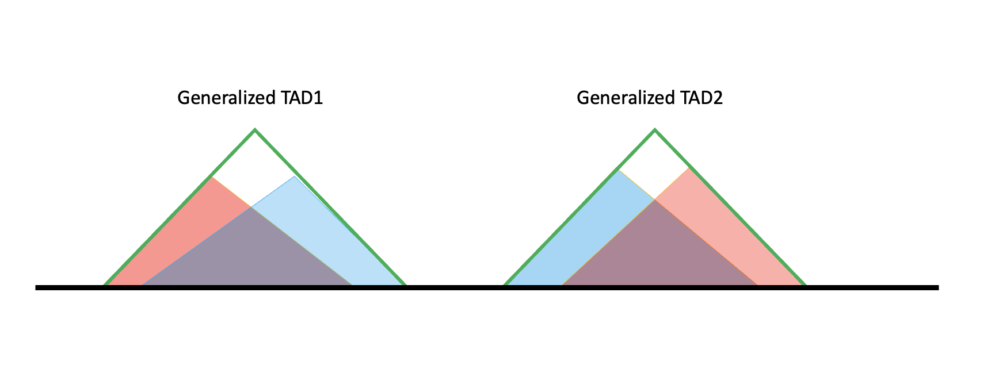
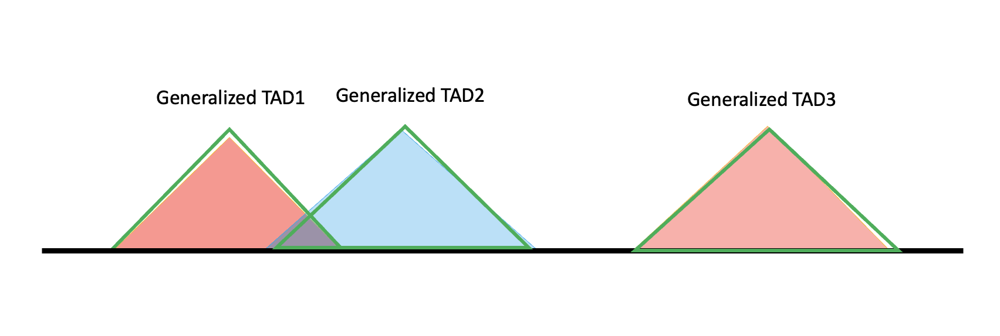
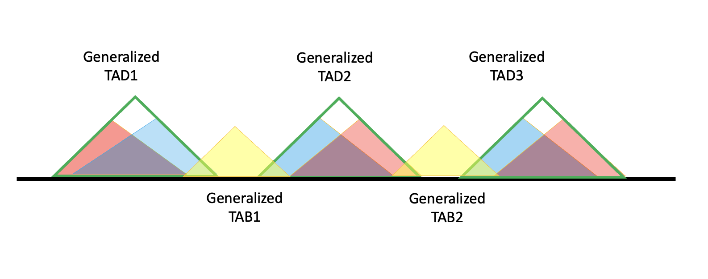
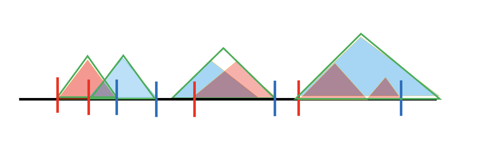
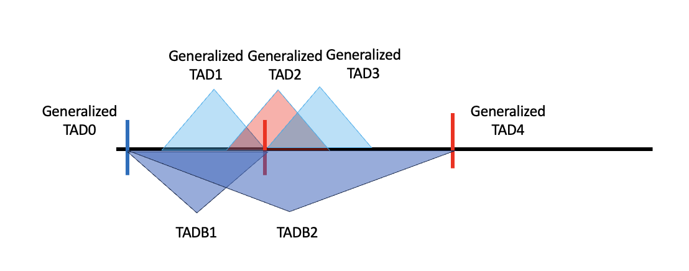

Generation of Topologically Associated Domains and their Boundaries#
Description#
This notebook builds TAD boundaries (TADBs) and TADB-enhanced cis windows from tissue/brain TAD calls. It runs in two conceptual stages: (i) manage TAD redundancy by recursively merging overlapping specific TADs (those whose overlap exceeds a cutoff) into a smaller set of generalized TADs, and (ii) generate TADB-enhanced cis windows and extended TADBs by deriving boundaries from the generalized + specific TADs and joining them with gene coordinates to produce per-gene cis windows.
During fine mapping we often use a cis window (up & downstream 1Mb of the start of a gene) as the fine-mapping region. That choice lacks a biological justification, so here we instead extend regions using TAD structure, producing both extended TADBs and TADB-enhanced cis windows since each serves a different goal. Genes within each TADB are extended by their 1Mb cis windows and the outermost boundary is taken, yielding roughly 1,381 TADBs that can serve as functional units for epigenetic analysis.
Synthetic-data note. This minimal working example runs on a small synthetic set of chr22 TAD blocks (
protocol_example.brain_TADs.txt) and a chr22 gene table (protocol_example.gene_start_end.tsv, derived from the protocol gene-model GTF). It is for demonstration only and does not reproduce a full genome-wide TADB build.
Input#
--tad-input: tab-separated TAD coordinates with columnschr,start,end(no header). Example:input/tadb/protocol_example.brain_TADs.txt.--gene-coords: gene coordinate table with columnsindex,#chr,start,end,gene_id,gene_name(derived from the gene-model GTF). Example:input/tadb/protocol_example.gene_start_end.tsv.--cwd: output directory (defaultoutput/tadb).--overlap-cutoff: minimum percent overlap to merge two specific TADs into one generalized TAD (default80).
For a genome-wide build, the raw inputs are Cortex_DLPFC_Schmitt2016-raw_TADs.txt and Hippocampus_Schmitt2016-raw_TADs.txt (hg38 cortex/hippocampus TAD regions, cf. McArthur et al 2021 and Schmitt et al 2017; available at 3dgenome.fsm.northwestern.edu) together with the gene model Homo_sapiens.GRCh38.103.chr.reformatted.collapse_only.gene.ERCC.gtf.
Output#
Generalized TAD:
generalized_TAD.tsvGeneralized TADB:
generalized_TADB.tsvTADB-enhanced cis window:
TADB_enhanced_cis.bedExtended TADB:
extended_TADB.bed
Detailed walkthrough#
The default workflow constructs the generalized TADs and TADB-enhanced cis windows in a single pass: it manages TAD redundancy (recursive merge of overlapping/neighboring TADs), derives generalized TAD boundaries, then builds the TADB-enhanced cis windows and extended TADBs by joining those boundaries with gene coordinates. The cells below document this process step by step for reference and reproducibility.
Timing: ~varies on typical compute infrastructure.
Step 1: Manage TAD Redundancy#
# merge the TADs to one file
cat ../../reference_data/TAD/Hippocampus_Schmitt2016-raw_TADs.txt ../../reference_data/TAD/Cortex_DLPFC_Schmitt2016-raw_TADs.txt > ../../reference_data/TAD/brain_TADs.txt
The merged TADs are processed in several passes. First, neighboring TABs are merged, including a step that manually corrects the start and end position of each chromosome. Preliminary merges then remove exact duplicates (same chromosome, start, and end). Next, the overlap between TADs is determined — the overlap with the preceding TAD, the overlap with the following TAD, and TADs entirely contained within another TAD — with two overlap values tracked per TAD (preceding and following). Finally, TADs are merged recursively: each TAD is extended to the right boundary of the last TAD and to the left boundary of the next, repeating until no further merging is possible, which yields the set of generalized TADs.
Step 2: Generate TADB-enhanced cis windows and extended TADBs#
How to find boundaries and build TADB#
After the generalized TAD is built, the intervals between TADs are not simply the boundaries. Most generalized TADs have a structure like the one below.

The black line is the genome, and the red and blue shaded triangles are TAD results from hippocampus and cortex, respectively; in the code they are denoted as specific TADs because they are specific to one tissue. The two specific TAD lists (blue and red) do not have overlaps internally, but when pooled together red and blue can overlap. If their overlap exceeds 80%, they are merged into a larger TAD called a generalized TAD (green triangle), giving the generalized TAD list.
It is not necessary that specific TADs line up this way. For example, if two specific TADs do not overlap enough, or if a specific TAD does not overlap any other TAD, each forms a generalized TAD solely, as shown below.

At the boundary of a generalized TAD there are regions not covered by either of the two specific TADs, meaning not all information belongs to a TAD; these can belong to a TAB (boundary region). A generalized TAB is defined to include not only the intervals but also the ambiguous regions, shown as the yellow triangles below. To form TADBs, the generalized TAD is combined with its adjacent TABs — in the diagram, for generalized TAD2 the TADB is (generalized) TAB1 + TAD2 + TAB2.

Generalized TADs formed from a single specific TAD have no ambiguous regions, so their boundaries are also the boundaries of the generalized TAB; under this definition, adjacent generalized TADs such as TAD2 and TAD3 can share the same TADB.
The strategy is to derive a list of left and right boundaries. For a generalized TAD formed by two or more specific TADs, the left boundary is the start of the second specific TAD; for one formed from a single TAD, the left boundary is just that TAD’s start. Right boundaries are defined symmetrically using the second-to-last specific TAD’s end. Left boundaries are shown as red vertical lines and right boundaries as blue vertical lines, and the definition also covers more complicated cases.

Given these boundaries, a TADB is built by extending the left side of a generalized TAD to the last right boundary (including the start of the chromosome, 0) and the right side to the next left boundary (including the end of each chromosome).
Build TADBs and remove redundancy#
The procedure produces 1401 generalized TADs in total. Gene start and end coordinates are obtained from the gene-model GTF. Most generalized TADs are formed from 2 specific TADs, though some are formed from as many as 4; the same boundary strategy applies in every case, and generalized TADs formed from one versus more specific TADs have different boundary definitions.
Left boundaries should include the end of the chromosome, because the left boundary of a TAD is the right boundary of the former TADB; the last TADB takes the end of the chromosome as its right boundary. Each TAD is then mapped to the closest left/right boundary. After extending to TADBs the number of regions does not change, as expected, but after merging some TADBs become fully covered by other TADBs — for example, the TADB formed by generalized TAD1 can be entirely contained within the extension of generalized TAD2 (blue: right boundary, red: left boundary).

Two steps are therefore used to exclude TADBs that are fully covered by another single TADB (including the case where two TADBs are identical). After removing subsets and duplicates, 1381 TADBs remain.
Length distribution#
The average length of the generalized TADs is a little shorter than 2Mb. The generalized TADBs have an average length a little longer than 2Mb, and the number of extreme cases increases; as expected, a TADB is longer than its TAD because it also includes the boundaries.
Compare TADB and cis windows#
Each TADB covers many genes. For fine-mapping, each gene is assigned a 1Mb cis window (2Mb total), so the next step checks whether the TADBs fully cover the cis windows of the genes inside them. Verifying that every gene is covered by a TADB confirms the TADBs are correct, since they should span the whole genome. The only genes in the full gene list not covered by a TADB are on chromosome Y, MT, or are ERCC spike-ins; these are expected to be absent because the TAD data does not include them. A value of 0 marks a cis window not fully covered by the TADB its gene lies in: even after constructing the TADBs, many genes still have a 1Mb cis window (2Mb total) that extends beyond its TADB region.
Construct TADB-enhanced cis windows and extended TADBs#
For each gene, its 1Mb upstream/downstream window (2Mb total) and the TADB it falls in are combined, extending the region outward to the smaller start and the larger end of the two. This yields one extended cis window per gene, most with a length close to or larger than the original 2Mb window, so that every gene maps to an extended cis window and none is left uncovered. Compared with the TADB-enhanced cis window, the extended TADB allows a single gene to belong to multiple extended regions.
sos run pipeline/generalized_TADB.ipynb default \
--tad-input input/tadb/protocol_example.brain_TADs.txt \
--gene-coords input/tadb/protocol_example.gene_start_end.tsv \
--cwd output/tadb
Command interface#
sos run pipeline/generalized_TADB.ipynb -h
Output#
generalized_TAD.tsv: redundancy-managed (merged) generalized TADs (chr,start,end).generalized_TADB.tsv: generalized TAD boundaries with aTADBindex.TADB_enhanced_cis.bed: per-gene TADB-enhanced cis windows (#chr,start,end,gene_id).extended_TADB.bed: extended TAD boundaries (#chr,start,end,index).
Anticipated Results#
The pipeline produces output files in the output/ subdirectory named after the workflow step. Verify success by checking that output files exist and are non-empty. See the Output section above for the expected file names and formats.
Troubleshooting#
Step |
Substep |
Problem |
Possible Reason |
Solution |
|---|---|---|---|---|
Workflow implementation#
The cells below define the SoS workflow steps invoked by the command above. They are not meant to be edited for routine analysis.
[global]
# Brain/tissue TAD coordinates: a tab-separated file with columns chr, start, end (no header)
parameter: tad_input = path
# Gene coordinates table derived from the gene-model GTF (columns: index, #chr, start, end, gene_id, gene_name)
parameter: gene_coords = path
# Output directory
parameter: cwd = path("output/tadb")
# Minimum percent overlap for two specific TADs to be merged into one generalized TAD
parameter: overlap_cutoff = 80
# Container image (kept empty; we no longer use containers)
parameter: container = ''
# Resource options (kept for parity with the protocol)
parameter: job_size = 1
parameter: walltime = "20h"
parameter: mem = "40G"
parameter: numThreads = 1
[default]
input: tad = tad_input, gene = gene_coords
output: gentad = f'{cwd}/generalized_TAD.tsv',
gentadb = f'{cwd}/generalized_TADB.tsv',
cis = f'{cwd}/TADB_enhanced_cis.bed',
ext = f'{cwd}/extended_TADB.bed'
task: trunk_workers = 1, trunk_size = job_size, walltime = walltime, mem = mem, cores = numThreads, tags = f'{step_name}_{_output["cis"]:bn}'
R: container=container, expand = "${ }", stderr = f'{_output["cis"]:n}.stderr', stdout = f'{_output["cis"]:n}.stdout'
library(tidyverse)
find_TAD_overlap <- function(x, inputDF){
rowChr <- x['chr']
rowStart <- as.numeric(x['start'])
rowEnd <- as.numeric(x['end'])
rowTADIndex <- x['TAD_index']
TADsubset <- inputDF %>% filter(chr == rowChr)
TADsubset$start <- as.numeric(TADsubset$start)
TADsubset$end <- as.numeric(TADsubset$end)
priorTADsubset <- TADsubset %>%
filter(start <= rowStart & rowStart <= end &
(start != rowStart | end != rowEnd)) %>% arrange(start)
nextTADsubset <- TADsubset %>%
filter(start <= rowEnd & rowEnd <= end &
(start != rowStart | end != rowEnd)) %>% arrange(-end)
completeOverlapSubset <- TADsubset %>%
filter(start <= rowStart & rowEnd <= end &
(start != rowStart | end != rowEnd))
priorOverlap <- 0
prior_TAD_index <- rowTADIndex
nextOverlap <- 0
next_TAD_index <- rowTADIndex
completeOverlap <- FALSE
if (nrow(priorTADsubset)) {
priorOverlap <- priorTADsubset %>%
mutate(inner_TAD_Length = end - rowStart,
outer_TAD_Length = end - start,
overlap = (inner_TAD_Length / outer_TAD_Length) * 100) %>%
arrange(-overlap)
prior_TAD_index <- priorOverlap$TAD_index[1]
priorOverlap <- priorOverlap$overlap[1]
if(is.na(prior_TAD_index)) stop(paste("The following TAD has an issue:", rowTADIndex))
}
if (nrow(nextTADsubset)) {
nextOverlap <- nextTADsubset %>%
mutate(inner_TAD_Length = rowEnd - start,
outer_TAD_Length = end - start,
overlap = (inner_TAD_Length / outer_TAD_Length) * 100) %>%
arrange(-overlap)
next_TAD_index <- nextOverlap$TAD_index[1]
nextOverlap <- nextOverlap$overlap[1]
if(is.na(next_TAD_index)) stop(paste("The following TAD has an issue:", rowTADIndex))
}
if (nrow(completeOverlapSubset)) { completeOverlap <- TRUE }
return(list(prior=as.character(priorOverlap), subsequent=as.character(nextOverlap), com=as.character(completeOverlap), prior_tad=as.character(prior_TAD_index), next_tad=as.character(next_TAD_index)))
}
merge_TADs <- function(x, inputDF, cutoff = ${overlap_cutoff}){
rowChr <- x["chr"]
rowStart <- as.numeric(x["start"])
rowEnd <- as.numeric(x["end"])
rowTADIndex <- as.character(x['TAD_index'])
rowPriorOverlap <- as.double(x["prior_overlap"])
rowPriorTADIndex <- as.character(x["prior_TAD_index"])
rowNextOverlap <- as.double(x["next_overlap"])
rowNextTADIndex <- as.character(x["next_TAD_index"])
newStart <- rowStart
newEnd <- rowEnd
if (rowNextOverlap >= cutoff && rowNextTADIndex != rowTADIndex) {
newEnd <- inputDF %>% filter(TAD_index == rowNextTADIndex)
if(is.na(newEnd %>% pull(end) %>% length())) print(newEnd$end[1])
newEnd <- newEnd$end[1]
}
if (rowPriorOverlap >= cutoff & rowPriorTADIndex != rowTADIndex) {
newStart <- inputDF %>% filter(TAD_index == rowPriorTADIndex)
newStart <- newStart$start[1]
}
return(list(newstart=newStart, newend=newEnd))
}
recursive_merge <- function(tadDF){
tadDF$TAD_index <- paste0('TAD_', seq(1, nrow(tadDF)))
overlap_results <- apply(tadDF, 1, find_TAD_overlap, tadDF)
tadDF$prior_overlap <- as.double(lapply(overlap_results, "[[", 'prior'))
tadDF$prior_TAD_index <- as.character(lapply(overlap_results, "[[", 'prior_tad'))
tadDF$next_overlap <- as.double(lapply(overlap_results, "[[", 'subsequent'))
tadDF$next_TAD_index <- as.character(lapply(overlap_results, "[[", 'next_tad'))
tadDF$complete_overlap <- as.logical(lapply(overlap_results, "[[", 'com'))
merge_results <- apply(tadDF, 1, merge_TADs, tadDF, ${overlap_cutoff})
tadDF$end <- as.numeric(lapply(merge_results, "[[", 'newend'))
tadDF$start <- as.numeric(lapply(merge_results, "[[", 'newstart'))
candidateDF <- tadDF %>% distinct(chr, start, end, .keep_all=TRUE)
if (nrow(tadDF) == nrow(candidateDF)) {
return(candidateDF)
} else {
candidateDF$TAD_index <- paste0('TAD_', seq(1, nrow(candidateDF)))
overlap_results <- apply(candidateDF, 1, find_TAD_overlap, candidateDF)
candidateDF$prior_overlap <- as.double(lapply(overlap_results, "[[", 'prior'))
candidateDF$prior_TAD_index <- as.character(lapply(overlap_results, "[[", 'prior_tad'))
candidateDF$next_overlap <- as.double(lapply(overlap_results, "[[", 'subsequent'))
candidateDF$next_TAD_index <- as.character(lapply(overlap_results, "[[", 'next_tad'))
candidateDF$complete_overlap <- as.logical(lapply(overlap_results, "[[", 'com'))
candidateDF <- candidateDF %>% filter(complete_overlap == FALSE)
candidateDF$TAD_index <- paste0('TAD_', seq(1, nrow(candidateDF)))
overlap_results <- apply(candidateDF, 1, find_TAD_overlap, candidateDF)
candidateDF$prior_overlap <- as.double(lapply(overlap_results, "[[", 'prior'))
candidateDF$prior_TAD_index <- as.character(lapply(overlap_results, "[[", 'prior_tad'))
candidateDF$next_overlap <- as.double(lapply(overlap_results, "[[", 'subsequent'))
candidateDF$next_TAD_index <- as.character(lapply(overlap_results, "[[", 'next_tad'))
candidateDF$complete_overlap <- as.logical(lapply(overlap_results, "[[", 'com'))
return(recursive_merge(candidateDF))
}
}
# ---- Step i. Manage TAD redundancy ----
general_TAD_DF <- read_tsv(${_input["tad"]:r}, col_names=c('chr', 'start', 'end'), show_col_types = FALSE)
general_TAD_DF <- general_TAD_DF[with(general_TAD_DF, order(chr, start, -end)),]
final_brain_TAD_DF <- recursive_merge(general_TAD_DF)
formatted_final_DF <- final_brain_TAD_DF %>% filter(chr %in% paste0('chr', seq(1,22))) %>% subset(select=c("chr", "start", "end"))
formatted_final_DF$end <- as.numeric(formatted_final_DF$end)
formatted_final_DF$start <- as.numeric(formatted_final_DF$start)
formatted_final_DF <- final_brain_TAD_DF %>% subset(select=c("chr", "start", "end"))
formatted_final_DF$start <- format(formatted_final_DF$start, scientific = FALSE)
formatted_final_DF$end <- format(formatted_final_DF$end, scientific = FALSE)
write.table(formatted_final_DF, ${_output["gentad"]:r}, sep="\t", append=FALSE, row.names=FALSE, col.names=FALSE, quote=FALSE)
# ---- Step ii. Generate TADB-enhanced cis windows and extended TADBs ----
general <- read_tsv(${_output["gentad"]:r}, col_names = c("chr", "start", "end")) %>% mutate(row_index = row_number())
specific <- read_tsv(${_input["tad"]:r}, col_names = c("chr", "start", "end")) %>% mutate(row_index = row_number())
chromosomes <- paste0('chr', seq(1:22))
chromosomes <- c(chromosomes,"chrX")
bplengths <- c(248956422, 242193529, 198295559, 190214555, 181538259, 170805979, 159345973, 145138636,
138394717, 133797422, 135086622,
133275309, 114364328, 107043718, 101991189, 90338345, 83257441,
80373285, 58617616, 64444167, 46709983, 50818468, 156040895)
chrDF <- data.frame(chr = chromosomes, left = bplengths)
find_left_boundary = function(chrm, start_pos, end_pos){
within_TAD = specific %>% filter(chr == chrm & start >= start_pos & end <= end_pos)
within_TAD_num = nrow(within_TAD)
if(within_TAD_num == 1){
left = within_TAD %>% pull(start) %>% as.integer()
}else{
TAD_start_list = within_TAD %>% pull(start) %>% sort()
left = TAD_start_list[2] %>% as.integer()
}
return(left)
}
left_table = general %>% mutate(left = pmap(list(chrm = chr, start_pos = start, end_pos = end), find_left_boundary)) %>% select(chr, left) %>% mutate(left = as.integer(left))
left_table_final = rbind(left_table, chrDF)
find_right_boundary = function(chrm, start_pos, end_pos){
within_TAD = specific %>% filter(chr == chrm & start >= start_pos & end <= end_pos)
within_TAD_num = nrow(within_TAD)
if(within_TAD_num == 1){
right = within_TAD %>% pull(end) %>% as.integer()
}else{
TAD_end_list = within_TAD %>% pull(end) %>% sort(decreasing = T)
right = TAD_end_list[2] %>% as.integer()
}
return(right)
}
right_table = general %>% mutate(right = pmap(list(chrm = chr, start_pos = start, end_pos = end), find_right_boundary)) %>% select(chr, right) %>% mutate(right = as.integer(right))
chr_start = tibble(chr = chromosomes, right = 0)
right_table_final = rbind(right_table, chr_start)
find_next_boundary = function(chrm, end_pos){
left_boundaries = left_table_final %>% filter(chr == chrm, left >= end_pos) %>% pull(left) %>% sort()
first_left = left_boundaries[1]
return(first_left)
}
find_previous_boundary = function(chrm, start_pos){
right_boundaries = right_table_final %>% filter(chr == chrm, right <= start_pos) %>% pull(right) %>% sort(decreasing = T)
first_right = right_boundaries[1]
return(first_right)
}
TADB = general %>% mutate(previous_bound = pmap(list(chr, start), find_previous_boundary),
next_bound = pmap(list(chr, end), find_next_boundary)) %>%
select(-start, -end) %>% rename(start = previous_bound) %>%
rename(end = next_bound) %>% mutate(start = as.integer(start), end = as.integer(end)) %>%
select(chr, start, end)
TADB = TADB %>% distinct()
if_fully_cover = function(chrm, start_pos, end_pos){
potential = TADB %>% filter(chr == chrm, start <= start_pos, end >= end_pos)
if(nrow(potential) <= 1){
return(0)
}else{
return(1)
}
}
TADB_final = TADB %>% mutate(cover_status = pmap(list(chrm = chr, start_pos = start, end_pos = end), if_fully_cover)) %>%
filter(cover_status != 1) %>% mutate(index = paste0("TADB", row_number())) %>% select(- cover_status) %>%
rename(`#chr` = chr)
write_tsv(TADB_final, ${_output["gentadb"]:r})
# ---- gene cis windows ----
all_gene <- read_tsv(${_input["gene"]:r})
all_gene = all_gene %>% select(-`...1`, -gene_name) %>% rename(chr = `#chr`, gene_start = start, gene_end = end) %>% distinct()
TADB_final = TADB_final %>% rename(chr = "#chr")
gene_TADB_tb = left_join(all_gene, TADB_final, by = "chr", relationship = "many-to-many") %>%
filter(!(gene_start > end) & !(gene_end < start))
# extended TADB-enhanced cis windows
cis_TADB = left_join(gene_TADB_tb, chrDF, by = "chr") %>% rename(chr_end = left) %>%
mutate(cis_start = pmax(0, gene_start - 1000000)) %>%
mutate(cis_end = pmin(chr_end, gene_end + 1000000))
extended = cis_TADB %>%
mutate(true_start = pmin(start, cis_start),
true_end = pmax(end, cis_end)) %>%
arrange(chr, true_start) %>% ungroup() %>%
select(chr, gene_id, true_start, true_end) %>%
rename(start = true_start, end = true_end)
extended_final = extended %>% group_by(chr, gene_id) %>% summarize(start = min(start), end = max(end)) %>% arrange(chr, start)
ordered_chr <- c(paste0("chr", as.character(1:22)), "chrX")
extend_cis_ordered <- extended_final %>% mutate(chr = factor(chr, levels = ordered_chr)) %>%
arrange(chr) %>% rename(`#chr` = chr) %>% select(`#chr`, start, end, gene_id)
write_tsv(extend_cis_ordered, ${_output["cis"]:r})
# ---- extended TADB ----
cis_TADB = left_join(gene_TADB_tb, chrDF, by = "chr") %>% rename(chr_end = left) %>%
mutate(cis_start = pmax(0, gene_start - 1000000)) %>%
mutate(cis_end = pmin(chr_end, gene_end + 1000000))
cis_summary = cis_TADB %>% group_by(index) %>% summarize(min_start = min(cis_start), max_end = max(cis_end))
extend_TADB = left_join(cis_summary, TADB_final, by = "index") %>% mutate(new_start = pmin(start, min_start)) %>%
mutate(new_end = pmax(end, max_end)) %>% mutate(length = new_end - new_start) %>%
mutate(old_length = end - start) %>% mutate(length_diff = length - old_length) %>% select(chr, new_start, new_end) %>%
rename(start = new_start, end = new_end) %>% mutate(index = paste0("TADB", row_number()))
extend_TADB <- extend_TADB %>% mutate(chr = factor(chr, levels = ordered_chr)) %>%
arrange(chr, start) %>% rename(`#chr` = chr) %>% mutate(index = paste0("TADB_", row_number()))
write_tsv(extend_TADB, ${_output["ext"]:r})
cat("DONE: generalized TADs =", nrow(formatted_final_DF), "| TADB_final =", nrow(TADB_final), "| cis windows =", nrow(extend_cis_ordered), "| extended TADB =", nrow(extend_TADB), "\n")